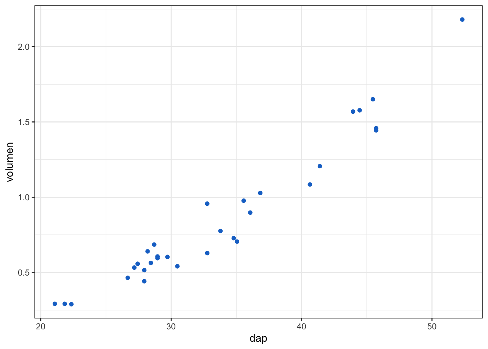
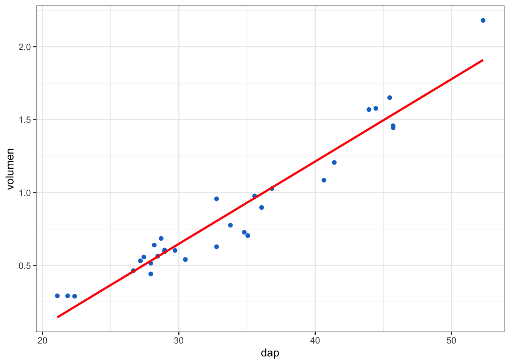
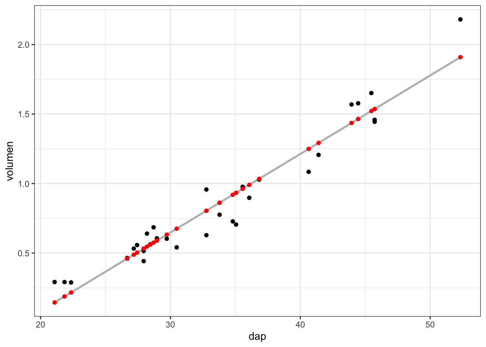

6 Regresión lineal simple
La regresión lineal simple describe la relación entre una variable respuesta (variable dependiente) y una variable explicativa (variable independiente).
A diferencia de la correlación, donde las variables no se consideran variable respuesta o explicativa, en la regresión simple debe estar muy claro cual es la variable respuesta y cual es la variable explicativa. Por ejemplo, el peso corporal puede tener un efecto sobre la presión sanguínea, pero la presión sanguínea no puede tener un efecto sobre el peso corporal. Está muy claro quien es la varibale respuesta y cual la variable explicativa.
Propósitos del modelo de regresión:
Descripción: describir la relación entre la variable respuesta (\(Y\)) y la variable explicatoria (\(X\))
Explicación: cuantificar la variación de \(Y\) explicada por la relación con \(X\)
Predicción: predecir nuevos valores de \(Y\) basados en nuevos valores de \(X\)
Veamos un modelo de regresión simple, pero antes, carguemos los paquetes que utilizaremos en este análisis:
library(tidyverse)
library(rio)
library(sjPlot)
library(parameters)
library(performance)
library(see)
library(lmtest)
library(car)
library(carData)
library(sandwich)
library(psych)Cargamos los datos trees que se incluyen en R.
Estos datos contienen las siguientes medidas de árboles:
Girth: diámetro a la altura del pecho de los árboles en pulgadas
Height: altura de los árboles en pies
Volume: volumen de los árboles en pies cúbicos
Lo que vamos a hacer es cambiar el nombre del conjunto de datos arboles y crear nuevas variables en español y con el sistema métrico decimal, para ellos utilizaremos la función mutate del paquete dplyr (tidyverse)
Con la función mutate() podemos computar tranformaciones de variables en un data frame. A menudo, tendremos la necesidad de crear nuevas variables que se calculan a partir de variables existentes.
arboles <- trees %>%
mutate(dap = Girth*2.54, # de pulgadas a centímetros
altura = Height/3.281, # de pies a metros
volumen = Volume/35.315) # de pies cúbicos a metros cúbicos
arboles <- arboles[, c("dap", "volumen","altura")]Ahora tenemos 3 nuevas variables:
dap: diámetro a la altura del pecho en centímetros
altura: altura de los árboles en metros
volumen: volumen de los árboles en metros cúbicos
Veamos los datos. Con la función head podemos ver las primeras 6 filas de los datos
## dap volumen altura
## 1 21.082 0.2916608 21.33496
## 2 21.844 0.2916608 19.81103
## 3 22.352 0.2888291 19.20146
## 4 26.670 0.4643919 21.94453
## 5 27.178 0.5323517 24.68760
## 6 27.432 0.5578366 25.29717## 'data.frame': 31 obs. of 3 variables:
## $ dap : num 21.1 21.8 22.4 26.7 27.2 ...
## $ volumen: num 0.292 0.292 0.289 0.464 0.532 ...
## $ altura : num 21.3 19.8 19.2 21.9 24.7 ...Graficamos los datos usando el dap (diámetro a la altura del pecho) en el eje de las \(x\) (abscisas) y el volumen en el eje de las \(y\) (ordenadas).

Echemos un vistaso a las correlaciones entre las variables:

Vamos a ajustar un modelo lineal general, es decir una regresión lineal simple. Para eso usamos la función lm (linear model)
##
## Call:
## lm(formula = volumen ~ dap, data = arboles)
##
## Coefficients:
## (Intercept) dap
## -1.04611 0.05648##
## Call:
## lm(formula = volumen ~ dap, data = arboles)
##
## Residuals:
## Min 1Q Median 3Q Max
## -0.228383 -0.087971 0.004303 0.098960 0.271466
##
## Coefficients:
## Estimate Std. Error t value Pr(>|t|)
## (Intercept) -1.046112 0.095289 -10.98 7.62e-12 ***
## dap 0.056475 0.002758 20.48 < 2e-16 ***
## ---
## Signif. codes: 0 '***' 0.001 '**' 0.01 '*' 0.05 '.' 0.1 ' ' 1
##
## Residual standard error: 0.1204 on 29 degrees of freedom
## Multiple R-squared: 0.9353, Adjusted R-squared: 0.9331
## F-statistic: 419.4 on 1 and 29 DF, p-value: < 2.2e-16## (Intercept) dap
## -1.04611239 0.05647548Primero veamos lo que está pasando gráficamente
ggplot(arboles, aes(dap, volumen)) +
theme_bw() +
geom_point(color = "dodgerblue3") +
geom_smooth(method = lm, se = FALSE, color = "red")## `geom_smooth()` using formula = 'y ~ x'
La línea de color rojo representa el modelo de regresión ajustado a los datos. Matemáticamente, podemos escribir la ecuación del modelo de regresión de la siguiente manera:
\(Y \approx\beta _0+ \beta _1X+ \varepsilon\)
donde:
- \(Y\) representa a la variable respuesta
- \(X\) representa la variables explicativa
- \(\beta _0\) es el intercepto del modelo
- \(\beta _1\) la pendiente del modelo
- \(\varepsilon\) es el error, término que significa la variabilidad de \(Y\) que el modelo no puede explicar (lo que \(X\) no puede decirnos sobre \(Y\))
En nuestro ejemplo, \(volumen ≈ intercepto + pendiente(dap) + error\)
Veamos un resumen numérico del modelo
##
## Call:
## lm(formula = volumen ~ dap, data = arboles)
##
## Residuals:
## Min 1Q Median 3Q Max
## -0.228383 -0.087971 0.004303 0.098960 0.271466
##
## Coefficients:
## Estimate Std. Error t value Pr(>|t|)
## (Intercept) -1.046112 0.095289 -10.98 7.62e-12 ***
## dap 0.056475 0.002758 20.48 < 2e-16 ***
## ---
## Signif. codes: 0 '***' 0.001 '**' 0.01 '*' 0.05 '.' 0.1 ' ' 1
##
## Residual standard error: 0.1204 on 29 degrees of freedom
## Multiple R-squared: 0.9353, Adjusted R-squared: 0.9331
## F-statistic: 419.4 on 1 and 29 DF, p-value: < 2.2e-16Seguidamente, echemos una mirada a los residuales del modelo.
Calculemos estos valores y posteriormente, los agregaremos al gráfico:
Seguidamente mostraremos el gáfico con datos crudos y los valores predichos:
ggplot(arboles, aes(dap, volumen)) +
theme_bw() +
geom_smooth(method = lm, se = FALSE, color = "gray") +
geom_point() +
geom_point(aes(y = predicho), color = "red")## `geom_smooth()` using formula = 'y ~ x'
Representamos gráficamente los residuales:
ggplot(arboles, aes(dap, volumen)) +
theme_bw() +
geom_smooth(method = lm, se = FALSE, color = "gray") +
geom_point() +
geom_point(aes(y = predicho), color = "red") +
geom_segment(aes(xend = dap, yend = predicho), color = "blue")## `geom_smooth()` using formula = 'y ~ x'Pero todos los modelos tienen supuestos
El modelo lineal general debe cumplir los siguientes supuestos para que el modelo sea interpretado y aplicado en la práctica.
Supuestos de un modelo lineal general
- Linealidad
- Normalidad
- Homogeneidad de varianza
- Independencia
Para verificar los supuestos debemos ver gráficos diagnósticos del modelo que permiten gráficar los residuales del modelo
Linealidad
Un modelo es lineal cuando cualquier valor de la variable dependiente o respuesta (\(y_i\)) es descrita por una combinación lineal de una serie de parámetros (coeficientes de la pendiente, intercepto).
\(Y \approx \beta _0 + \beta _1X_1 + ... + \beta _n X_n + \varepsilon\)